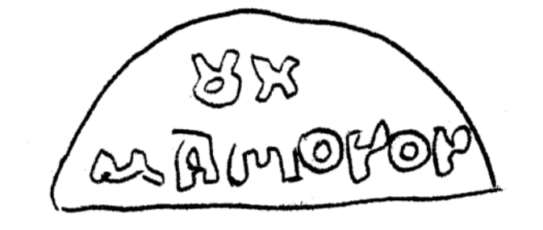

სამკაულის ფრაგმენტი IV-V სს.; ბერძნული წარწერა
ბიბლიოგრაფია Bibliography
კრიტიკული გამოცემა Interpretive Edition
ου χ μαπ(?)ονον πόνος ὦνος ὦνον
οὐχ
μα πόνον
დიპლომატიური გამოცემა Diplomatic Edition
ΟΥΧΜΑΠ(?)ΟΝΟΝΠΟΝΟΣΩΝΟΣΩΝΟΝ
ΟΥΧ
ΜΑ ΠΟΝΟΝ

Piece of gold jewelry from Nokalakevi, 2003
{'ka': 'არა განცდას'}
{'default': 'ნივთი რომელიღაც უფრო რთული კონსტრუქციის (სამკაულის) ნაწილია; მასზე დაცული ბერძნული ასოები მთლიანად ტექსტის აღდგენის საშუალებას არ იძლევიან. I სტრიქონში არის: ΟΥΧ. ცენტრშია ასო χ, მის წინ არსებული ου (ου) შესაძლოა არის რომელიმე სიტყვის დაბოლოება; ანდა ΟΥΧ (οὐχ) წერია და ეს არის οὐ - უარყოფითი \n ნაწილაკის ვარიანტი οὐχ. ამ სტრიქონის დასაწყისში (ე.ი. ΟΥΧ-ის მარცხნივ) არის ორი ასოს კვალი. χ-ს შემდეგ აშკარად ყოფილა ორი ასო, ჩანს მათი ფრაგმენტები. II \n სტრიქონში იკითხება: μαπ(?)ονον. π საეჭვოა, შეიძლება იყოს რაიმე ლიგატურის ფრაგმენტი - ეს ასო უშუალოდ Ι სტრიქონის χ-ს ქვეშ არის. II სტრიქონი სავარაუდოდ ასე იკითხება: \n πόνος (acc. πόνον, შრომა, განცდა, დარდი) ან - ὦνος (acc. ὦνον) - საფასური, ყიდვა. ამ სიტყვის წინ μα თუ ნაწილაკი μά არ არის (ფიცის შეძახილი, მაგ., μὰ Δία), \n შეიძლება ის წინა სიტყვის დაბოლოება იყოს. თუ ის დავშალეთ და μ ცალკე აღვიქვით, ხოლო α შევუერთეთ πόνος (ἄπονος - ნიშნავს - უშრომელი, ოილი), მაშინ μ-ს \n საკითხი რჩება გასარკვევი. დათარიღების საფუძველი შეიძლება იყოს ასოთა მოხაზულობა. ასო χ ძირითადად ყველა დროში ერთნაირად იწერება, ამიტომ ის დასათარიღებლად არ გამოდგება. რაც შეეხება \n ο-ს, ის ძირითადად არის ან მრგვალი, ან მომაღლო მრგვალი (აქ ეს მეორე ვარიანტია), რაც დამოუკიდებლად დამათარიღებელი არ არის. ο-ს კუთხოვანი ვარიანტი ძირითადად II-III \n სს-დან გვხვდება. ასო μ-ს საერთოდ სხვადასხვა მოხაზულობა აქვს. ნოქალაქევის μ-ს მსგავსი მოხაზულობის μ გვაქვს დროის საკმაოდ დიდ მონაკვეთზე - დაწყებული ძვ.წ. I ს-დან \n ახ.წ. IV ს-ის ჩათვლით. ეს წარწერებია: ხერსონესში ძვ.წ. I ს. - ახ.წ. IV ს-ში, ოლვიაში II ., პონტოსპირეთის თარიღიან წარწერებში I, II, III ს-დან, იქიდანვე ზოგადად \n რომაული ხანით და ქრისტიანული ხანით დათარიღებულ წარწერებში. საქართველოშ - II, III სს. და IV-V სს-ით დათარიღებულ წარწერებში. აქ მოყვანილი მასალა ძირითადად \n ლაპიდარული წარწერებიდან არის. ყურადღებას იპყრობს α-ს მოხაზულობა. მსგავსი მოხაზულობის α ლაპიდარულ წარწერებშ გვაქვს - ბოსფორიდან 307 წლისა და 1328 წლის წარწერებში. \n საქართველოში ერთია 1664 წლის ჭედურ ჯვარზე, ხოლო სხვა დანარჩენი XI-XVII საუკუნეების ფრესკულ წარწერებზე. ნოქალაქევის ამ წარწერაში საყურადღებოა ორი ნიშანი: μ ου. \n μ ასო გვხვდება ბოსფორისა და პონტოსპირეთის ლაპიდარულ წარწერებში, ასევე საქართველოს ფრესკულ წარწერებში. ბოსფორის წარწერებში ის იხმარება: IX-X სს., 1403 წ. წარწერაში, \n 1594 წ., 1622 წ., უთარიღო წარწერაში. პონტოსპირეთის ამ ასოს შემცველ წარწერას აქვს შენიშვნა, რომ ის XI ს-ის ბიზანტიური მინუსკულია. საქართველოს ფრესკებზე გვხვდება μ \n (ე.ი. მინუსკულური N) XIV-XVII საუკუნეებში. გაცილებით უფრო ხშირია ου - დაწერილობა. გამოირჩევა ძირითადად თარიღიანი და დათარიღებული წარწერები. ბოსფორის წარწერათაგან \n აღსანიშნავია: №24 - VI-VII სს., №72 - VIII-IX სს., №51 - IX-X სს., №25 (ზოგადად ბიზანტიური ხანით დათარიღებული). შემდეგ არის თარიღიანი ლაპიდარული წარწერები XIV-XVII \n სს-ის: №58 (1328 წ.), №63 - 1413 წ., №64 - 1417 წ., №3 - 1440 წ., №62 - 1587 წ., №57 - 1594 წ., №60 - 1622 წ. პონტოსპირეთის წარწერათაგან ου-ს შეიცავენ შემდეგი: \n №230 - ფლავიუსების ეპოქის, №195 - გამომცემელი ათარიღებს IV-V სს. №211 - V ს., № 145b - ჯერ ზოგადად ბიზანტიური ხანისად მიიჩნევს, შემდეგ წერს, რომ არის XI ს-ის \n მინუსკული. საქართველოს ლაპიდარულ, ჭედურ, მინანქრულ და ფრესკულ წარწერებში ου გვხვდება VIII-XVIII საუკუნეებში. რაც შეეხება ΙΙ სტრიქონის ცენტრალურ ასოს თუ ის არის π \n (რაც სავარაუდოა), მსგავსი სახით იგი არ იძებნება ლაპიდარულ, ჭედურ და მინანქრულ წარწერებში.'}
<div type="edition" xml:lang="ka" ana="mtavruli" xml:space="preserve">
<ab>
<lb n="1"/><w lemma="ქრისტე"><expan><abbr>ქ</abbr><ex>რისტ</ex><abbr>ე</abbr></expan></w>
<w lemma="განსუენება"><expan><abbr>გა</abbr><ex>ნ</ex><abbr>ო</abbr><ex>ჳ</ex><abbr>ს</abbr><ex>უ</ex><abbr>ენე</abbr></expan></w>
<w lemma="სულ">სოჳ<lb n="2" break="no"/>ლსა</w>
<name nymRef="ვაჩა">ვაჩაჲს<lb n="3" break="no"/>ასა</name>
<name nymRef="გურა"><expan><abbr>გო</abbr><ex>ჳ</ex><abbr>რაჲ<lb n="4" break="no"/>სასა</abbr></expan></name>
<name nymRef="მირა"><expan><abbr>მ</abbr><ex>ი</ex><abbr>რა</abbr><ex>ჲ</ex><abbr>ს</abbr><ex>ა</ex><abbr>ს</abbr><ex>ა</ex></expan></name>
</ab>
</div>